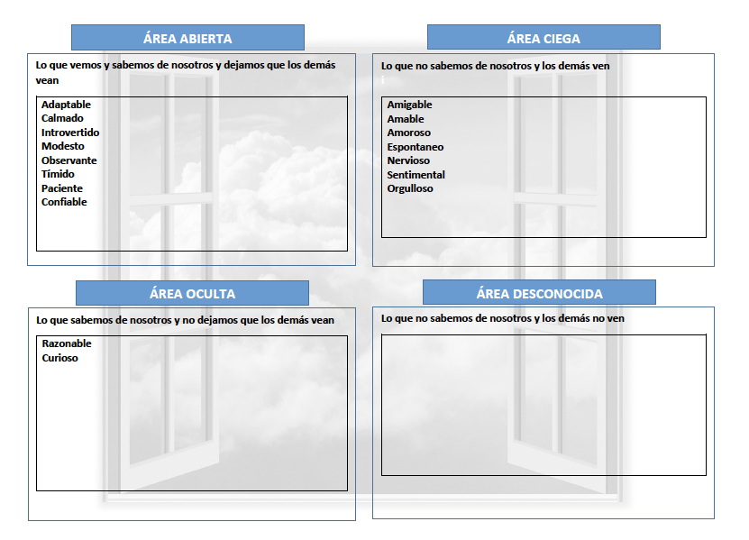

Mi Ventana de Johari

Testimonio
Adaptable
Te adaptas rápido a un lugar, eres accesible a cambios y a experimentar cosas nuevas.

Katty Lucero - Roomie
Confiable
Conocí a Jesus hace más de 9 años, cuando ambos iniciamos los estudios en ingeniería de hecho fue mi primer amigo en la universidad, con el tiempo los lazos de amistad se fortalecieron debido a que siempre ha sido una persona con la que se puede contar y sobretodo confiar.